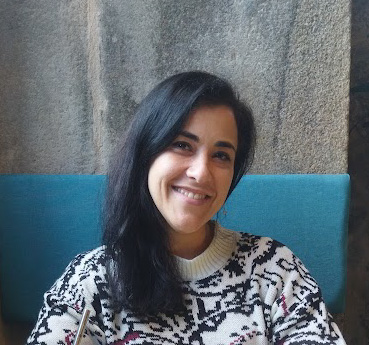

Sara Virgínia
Architect and Urban Designer
Dear Prospective Employer,
As an experienced architect and urban designer, I bring a wealth of knowledge and expertise to the table. However, I am also excited to share my recent journey into the realm of Information Technology (IT), particularly through the robust Power Platform ecosystem. Allow me to elaborate:
- Power Platform Proficiency: Leveraging my architectural background, I have delved into mastering various tools within the Power Platform, including Power Apps, Power Automate, Power BI, and SharePoint. Through these platforms, I am equipped to develop innovative solutions that seamlessly blend design principles with advanced technological capabilities.
- Bridging Traditional and Modern: My transition into IT represents a conscious effort to bridge the gap between traditional architectural practices and modern technological advancements. By harnessing the power of low-code development and data-driven insights, I aim to revolutionize how we approach urban planning and design.
- Integrated Solutions: My vision extends beyond standalone applications; I aspire to create integrated solutions that harmoniously incorporate both physical and digital elements of urban development. From intuitive Power Apps interfaces to dynamic Power BI dashboards, I am committed to delivering comprehensive solutions that address the complex challenges of modern urban environments.
- Transformative Impact: Join me on this transformative journey as we explore the limitless potential of technology to reshape our cities and communities. Together, we can leverage the Power Platform to drive meaningful change and build a brighter, more sustainable future.
Trabalhos em HTML
Texto de introdução sobre os trabalhos em HTML com 5 linhas.

Legenda da Foto HTML 1

Legenda da Foto HTML 2
Trabalhos em PowerApp
Texto de introdução sobre os trabalhos em PowerApp com 5 linhas.
Legenda da Foto PowerApp 1
Legenda da Foto PowerApp 2
Trabalhos em Power BI
Texto de introdução sobre os trabalhos em Power BI com 5 linhas.

Legenda da Foto Power BI 1

Legenda da Foto Power BI 2